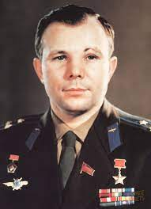
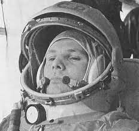
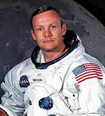
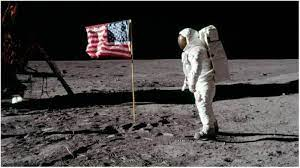
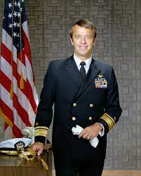
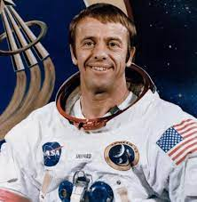
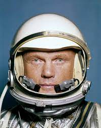
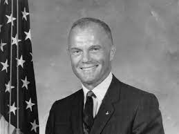
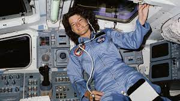
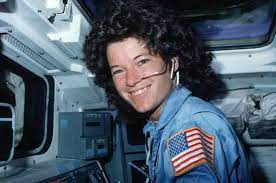

In 1955, Soviet cosmonaut Yuri Gagarin was chosen by the Soviets for mankind’s first trip to space due to his impressive record as a fighter pilot in the military. Six years later, Gagarin would take a flight 203 miles above the earth, making him the first person to go into space.
His first words, the first ever spoken by a human in space, were, “I see the earth. It’s so beautiful!”
 Neil Armstrong is arguably the most famous astronaut that ever lived. The Ohio-born astronaut became famous the world over in 1969 when he became the first man to walk on the moon. His iconic words, “that’s one small step for man, one giant leap for mankind,” are some of the most famous in history.
The astronaut led a relatively quiet life after returning to earth, spending the rest of his career teaching and working for aviation companies. He died in 2012.
 Born in 1923, Nasa Astronaut Alan Shepard was the first American in space. After WWII, Alan Shepard went back to school and became a test pilot. He is famous for being one of only 12 individuals who also walked on the moon. Alan Shepard was involved in 2 space missions, and famously was the first person to hit a golf ball on the moon.
 John Glenn was one of the most American astronaut heroes. In 1962, he became the first American to orbit the earth — he travelled around the world three times in five hours aboard the Friendship 7 spacecraft.
It was far from his foray into the exciting world of altitude travel. Five years before he became the first American to orbit the earth, Glenn became the first person to travel across the American continent at supersonic speeds. During that trip, a start of the art attached to the aircraft captured the first panoramic image of the United States. His success prompted NASA to draft him as part of ‘Mercury Seven,’ which was the first gathering of astronauts in the country.
 Her trip to space got underway on June 18th, 1983, as part of the STS- mission on the Challenger along with five other astronauts. Her second space trip occurred a year later, also aboard the Challenger.
The Space Shuttle Challenger disaster put all space trips on hold, and Ride wasn’t able to go on any further mission. She retired from NASA in 1987 and worked as a physics professor and a vocal advocate for Stem education. Ride would stay in the public eye, however, as a key part of both the 1986 and 2003 investigations into the Challenger disaster.
 Any feedback is appreciated. Please leave your thoughts here.